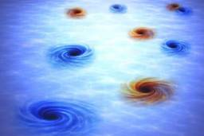

ナゾロジー
https://nazology.kusuguru.co.jp
身近に潜む科学現象から、ちょっと難しい最先端の研究まで、その原理や面白さを分かりやすく伝えられるようにニュースを発信していきます。最新の科学技術やおもしろ実験、不思議な生き物を通して、もう一度、皆さんの心にナゾを解き明かす「ワクワクの火」を灯したいと思っています。
フィード
歯周病菌を「狙い撃ち」する新しい歯磨き粉が登場――善玉菌は減らさない 1
1
ナゾロジー
私たちの口の中には、700種類以上の細菌がひしめき合っています。 まるで小さな都市のように、善良な住民もいれば、トラブルメーカーもいる。 そんな「口内タウン」で、これまでの強い殺菌タイプの歯磨き粉やマウスウォッシュは、問題を解決するために街ごと焼き払うような方法を取ってきました。 悪い菌を殺すために、良い菌まで道連れにしていたのです。 しかしドイツのフラウンホーファー研究所（FhG）が開発した新しい歯磨き粉は、まったく違うアプローチを採用しています。 歯周病菌をピンポイントで「無力化」し、善玉菌は元気に活動できる状態を保つという、いわばスナイパー型の歯磨き粉です。 この研究は2026年1月5日にフラウンホーファー協会のリサーチニュースとして発表されました。
3時間前

闇は光より速い――光速を超え無限大へ向かう「特異点」を発見 1
ナゾロジー
真空中での光の速さは、秒速およそ30万キロメートル。 物理学が100年以上にわたって「これより速いものは存在しない」と断言してきた、宇宙の絶対的な制限速度です。 ところが世界最高峰の科学誌『Nature』に、その絶対をひっくり返すような論文が掲載されました。 イスラエル工科大学（Technion）のイド・カミナー教授らのチームが、光波の中に存在する多数の「暗闇の点」を直接観測したところその平均速度は、秒速約3億1200万メートル、つまり真空中の光速の1.04倍だったのです。 また全体をみると観測された闇のうち29%が光速を突破していました。 しかも、ある瞬間を切り取ると、速度は理論上は闇の速度が無限大に向かって発散しているということです。 この現象は、1970年代以来、マイケル・ベリーらの一連の理論研究で予測されてきたものでした。 彼は今回の研究で観測された闇のような存在について、光その…
4時間前
性格特性が「性的妄想の頻度」と関連することが明らかに
ナゾロジー
人は誰でも、ふとした瞬間に頭の中で現実とは別の場面を思い描くことがあります。 それが仕事の成功や旅行の計画であることもあれば、恋愛や性的な場面であることもあります。 では、そうした「性的な妄想」をどれくらい頻繁に抱くかは、その人の性格と関係しているのでしょうか。 米ミシガン州立大学（MSU）の研究チームは今回、5225人の成人を対象に、「ビッグファイブ性格特性」と「性的妄想の頻度」との関連を調査。 その結果、誠実性や協調性が高い人ほど性的妄想の頻度が低く、ネガティブな感情傾向、特に抑うつ傾向が高い人ほど頻度が高い傾向が明らかになりました。 研究の詳細は2026年2月4日付で学術誌『PLOS ONE』に掲載されています。
8時間前
ローマ人が発明したとされる高度な建築技術ーー実は8000年前にすでに存在していた 1
ナゾロジー
「古代ローマの建築技術」と聞くと、多くの人はコロッセオや水道橋、分厚い壁に支えられた巨大建築を思い浮かべるかもしれません。 ローマ人は石材やコンクリートを巧みに使い、長く残る建物を作ったことで知られています。 ところが、そんなローマ人の発明とされていた高度な建築技術の一部が、実はローマ人より約8000年も前に存在していた可能性が出てきました。 イスラエルのエルサレム西方にあるモツァ遺跡で見つかった新石器時代の漆喰床を分析したところ、これまで古代ローマで初めて使われたと考えられていた「ドロマイト質の石灰漆喰」の製造技術が確認されたのです。 研究の詳細はイスラエル考古学庁（IAA）により、2026年4月16日付で学術誌『Journal of Archaeological Science』に掲載されています。
13時間前
赤ちゃん、大人と同じ美的感覚をもっている可能性【年々研ぎ澄まされていく】
ナゾロジー
「きれいだ」と感じる感覚は、いつから生まれるのでしょうか。 それは経験や文化の中で身につくものだと考えられがちです。 しかしフランスのグルノーブル・アルプ大学（UGA）の研究チームによる最新の研究は、この感覚がかなり早い時期から芽生えている可能性を示しました。 生後わずか4か月の赤ちゃんが、大人が「美しい」と評価した動きに、同じように長く注意を向けていたというのです。 この研究は2026年4月22日付で、『Proceedings of the Royal Society B』に掲載されました。
13時間前
「まじめで誠実な人」に見つかった長所と短所とは？ 2
ナゾロジー
約束の時間を守る、やるべきことを最後までやる、部屋や予定をきちんと整える。 そんな「まじめで誠実な人」は、仕事でも人間関係でも信頼されやすい存在です。 しかし近年の心理学研究では、この誠実さには意外な二面性があることが示されています。 誠実な人は、人生のトラブルを避け、物事に深く没頭しやすい一方で、日常の喜びやユーモアを感じにくい傾向もあるかもしれないのです。 研究の詳細はベルギーのルーヴェン・カトリック大学（KU Leuven）らにより、2025年6月27日付での学術誌『Personality』に掲載されています。
18時間前
「特定の昼寝パターン」は危険信号かもしれない
ナゾロジー
昼寝は、疲れた頭と体をリセットしてくれる気持ちのいい習慣です。 短い昼寝をすると、眠気が取れ、集中力や反応の速さが戻ると感じたことがある人も多いでしょう。 しかし高齢者の場合、昼寝が長い、回数が多い、午前中から眠ることが多いといったパターンは、単なる休息ではなく、体の不調を知らせるサインかもしれません。 アメリカの医学系研究機関マス・ジェネラル・ブリガム（MGB）などの研究チームは、56歳以上の1338人を最大19年追跡し、長い昼寝や頻繁な昼寝、とくに午前中の昼寝が、原因を問わず死亡するリスク、つまり全死亡リスクの高さと関連していることを報告しました。 この研究は2026年4月20日付で、『JAMA Network Open』に掲載されています。
18時間前

「過去への通信」が未来への通信より効率がいいと理論的に証明――発想はSF映画『インターステラー』のあのシーン 90
ナゾロジー
過去に向けた情報送信というと、多くの人は「SFの領域」と考えるはずです。 しかしMITなどで行われた研究により、理論上は過去に向かって情報を送ることが可能であるばかりか、過去に向かって送るほうが、ふつうに未来へ送るよりも「効率がいい」場合があることが数学的に示されました。 発想の源は、宇宙論と物理学をリアルに描いたSF映画『インターステラー』であり、論文では過去に向けた通信場面を取り入れた解説も行われています。 さらに論文の参考文献には『バック・トゥ・ザ・フューチャー』の登場人物の名前も並んでいます。 ここまで遊び心が溢れていながら、論文は物理学のトップ誌『Physical Review Letters』の審査に通り掲載が決定しています（2026年4月14日に受理）。 しかし、過去への通信が未来への通信に勝るとは、いったいどういうことなのでしょうか？
1日前

史上最強の剣士はだれ？世界の歴史に名を残す「伝説の剣豪7人」 38
ナゾロジー
人類はこれまで数多くの武器を発明しましたが、中で最もクールかつ絶大な人気を誇る武器といえば「剣」でしょう。 剣は何千年もの間、人類の主要な武器として狩りや戦闘に用いられました。 しかし一方で、剣は銃に比べて射程は短く、持っているだけで強力な兵器ではありません。 使いこなすために相当の技量を要し、その道を極めるためには長く厳しい戦いの世界を生き抜く必要があります。 それでも世界史を振り返ってみれば、各時代ごとに名剣士たちは存在しました。 そこで今回は、歴史に名を残している「伝説の剣豪7人」をご紹介します。
1日前
気温が高いほど「警察官の暴力性」が高まる傾向
ナゾロジー
暑い日が続くと、何となくイライラしやすくなったり、集中力が落ちたりすることがあります。 こうした「気温の高さ」は、強い緊張をともなう現場で働く警察官の行動に影響を与えるようです。 中国・南京信息工程大学（NUIST）の研究チームは、アメリカ全土の警察関連死データと気象データを照合し、月平均気温と警察による致死的暴力の発生率との関係を分析。 その結果、気温が一定の水準を超えると、警察による暴力死のリスクが高まる傾向が示されました。 研究の詳細は2026年3月20日付で科学誌『PLOS ONE』に掲載されています。
2日前